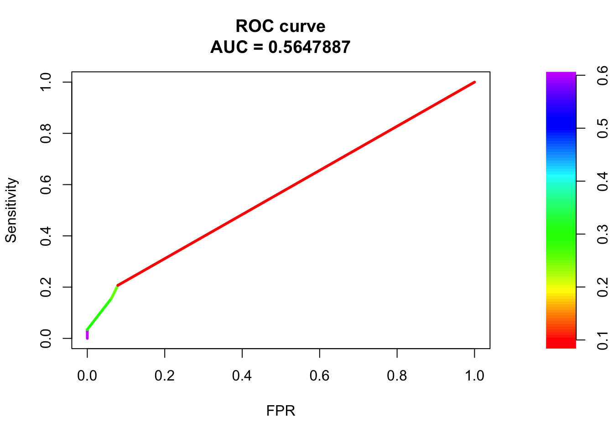
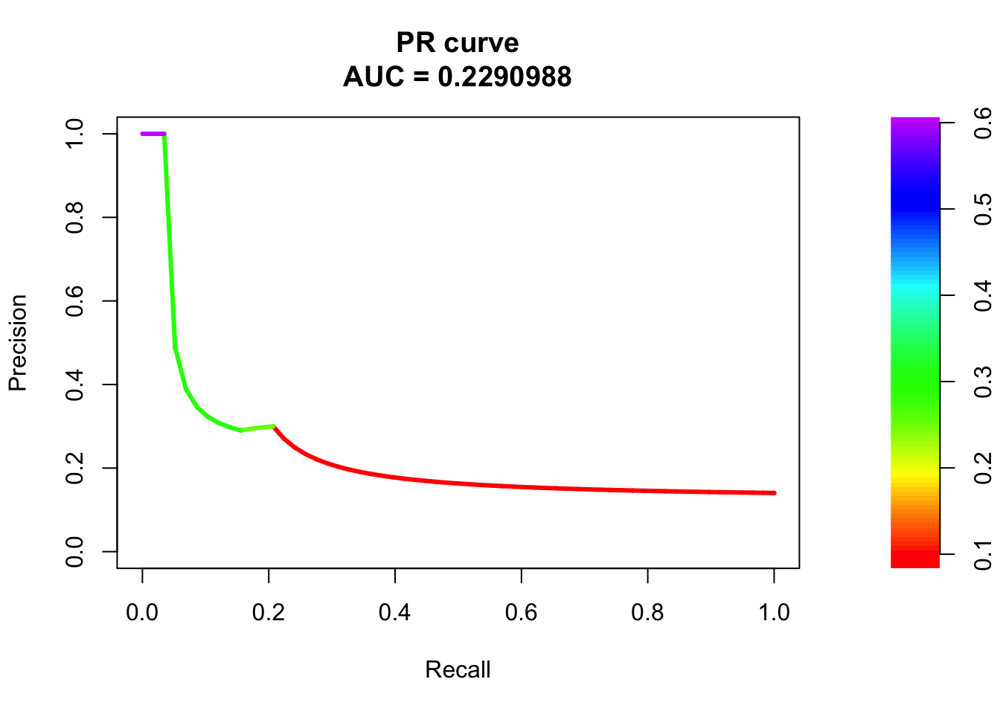
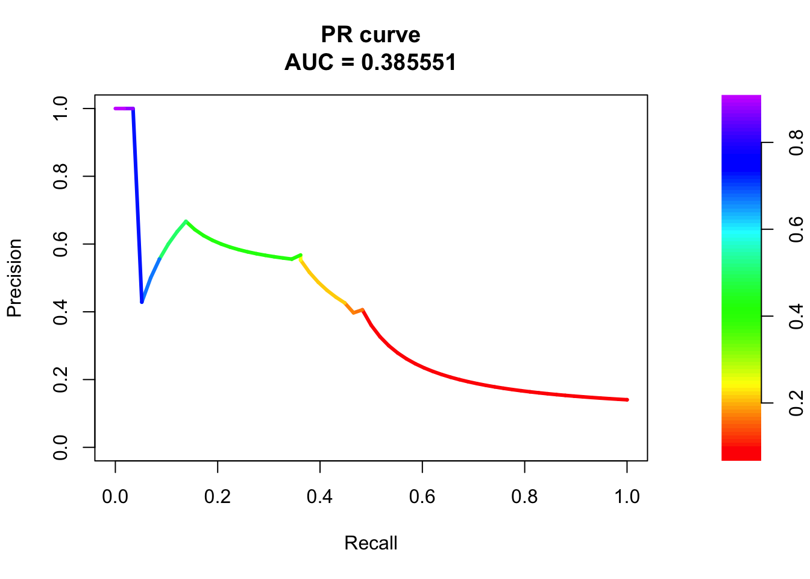
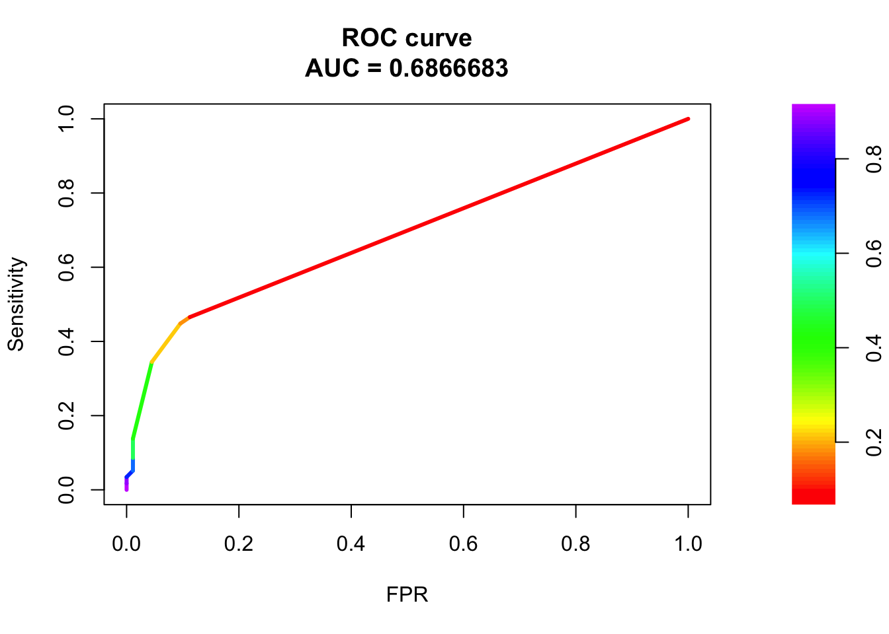
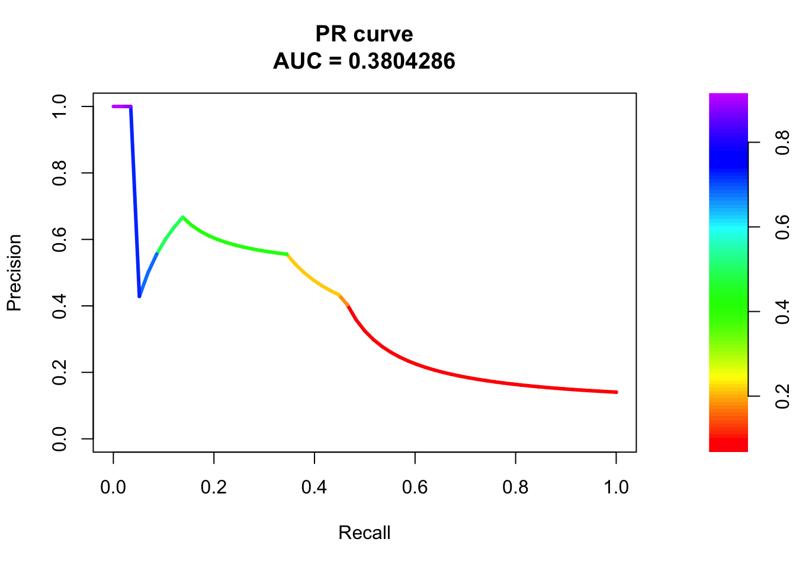

Last updated: 2020-09-16
Checks: 6 1
Knit directory: gene_level_fine_mapping/
This reproducible R Markdown analysis was created with workflowr (version 1.6.1). The Checks tab describes the reproducibility checks that were applied when the results were created. The Past versions tab lists the development history.
Great! Since the R Markdown file has been committed to the Git repository, you know the exact version of the code that produced these results.
Great job! The global environment was empty. Objects defined in the global environment can affect the analysis in your R Markdown file in unknown ways. For reproduciblity it’s best to always run the code in an empty environment.
The command set.seed(20200622) was run prior to running the code in the R Markdown file. Setting a seed ensures that any results that rely on randomness, e.g. subsampling or permutations, are reproducible.
Great job! Recording the operating system, R version, and package versions is critical for reproducibility.
Nice! There were no cached chunks for this analysis, so you can be confident that you successfully produced the results during this run.
Using absolute paths to the files within your workflowr project makes it difficult for you and others to run your code on a different machine. Change the absolute path(s) below to the suggested relative path(s) to make your code more reproducible.
| absolute | relative |
|---|---|
| /Users/nicholeyang/Desktop/gene_level_fine_mapping/data/train_all.RData | data/train_all.RData |
Great! You are using Git for version control. Tracking code development and connecting the code version to the results is critical for reproducibility.
The results in this page were generated with repository version d1f16be. See the Past versions tab to see a history of the changes made to the R Markdown and HTML files.
Note that you need to be careful to ensure that all relevant files for the analysis have been committed to Git prior to generating the results (you can use wflow_publish or wflow_git_commit). workflowr only checks the R Markdown file, but you know if there are other scripts or data files that it depends on. Below is the status of the Git repository when the results were generated:
Ignored files:
Ignored: .DS_Store
Ignored: .Rhistory
Ignored: .Rproj.user/
Ignored: analysis/.DS_Store
Ignored: analysis/.RData
Ignored: analysis/.Rhistory
Ignored: analysis/figure/
Untracked files:
Untracked: analysis/atac_eqtl.Rmd
Untracked: data/hic_eqtl.RData
Untracked: data/train_add_hic.RData
Untracked: data/train_all.RData
Unstaged changes:
Modified: analysis/add_hic_feature.Rmd
Modified: analysis/index.Rmd
Note that any generated files, e.g. HTML, png, CSS, etc., are not included in this status report because it is ok for generated content to have uncommitted changes.
These are the previous versions of the repository in which changes were made to the R Markdown (analysis/assess_distal_observation_filtered.Rmd) and HTML (docs/assess_distal_observation_filtered.html) files. If you’ve configured a remote Git repository (see ?wflow_git_remote), click on the hyperlinks in the table below to view the files as they were in that past version.
| File | Version | Author | Date | Message |
|---|---|---|---|---|
| Rmd | d1f16be | yunqiyang0215 | 2020-09-16 | wflow_publish(“analysis/assess_distal_observation_filtered.Rmd”) |
| html | dc44faa | yunqiyang0215 | 2020-09-16 | Build site. |
| Rmd | ebec31b | yunqiyang0215 | 2020-09-16 | wflow_publish(“analysis/assess_distal_observation_filtered.Rmd”) |
Narrow down to SNPs that are present in the positive dataset.
HiC and ATAC start to show some predictive power, a little bit better than the null model.
library(ggplot2)
library(dplyr)
Attaching package: 'dplyr'The following objects are masked from 'package:stats':
filter, lagThe following objects are masked from 'package:base':
intersect, setdiff, setequal, unionrequire(PRROC)Loading required package: PRROCload('/Users/nicholeyang/Desktop/gene_level_fine_mapping/data/train_all.RData')
head(train_all_sig) gene_name snp_loc38 variant_id UTR5 UTR3 exon intron
1 A1BG chr19:57866502 chr19_57866502_T_C_b38 0 0 0 0
2 A1BG chr19:58059544 chr19_58059544_T_G_b38 0 0 0 0
3 A1BG chr19:58170494 chr19_58170494_G_T_b38 0 0 0 0
4 A1BG chr19:58228973 chr19_58228973_T_G_b38 0 0 0 0
5 A1BG chr19:58330182 chr19_58330182_C_T_b38 0 0 0 0
6 A1BG chr19:58359927 chr19_58359927_G_A_b38 0 0 0 0
upstream tss_dist_to_snp y Mon Mac0 Mac1 Mac2 Neu MK EP Ery FoeT nCD4 tCD4
1 0 481132 0 0 0 0 0 0 0 0 0 0 0 0
2 0 288090 0 0 0 0 0 0 0 0 0 0 0 0
3 0 177140 0 0 0 0 0 0 0 0 0 0 0 0
4 0 118661 0 0 0 0 0 0 0 0 0 0 0 0
5 0 17452 1 0 0 0 0 0 0 0 0 0 0 0
6 0 6428 1 0 0 0 0 0 0 0 0 0 0 0
aCD4 naCD4 nCD8 tCD8 nB tB correlation
1 0 0 0 0 0 0 0
2 0 0 0 0 0 0 0
3 0 0 0 0 0 0 0
4 0 0 0 0 0 0 0
5 0 0 0 0 0 0 0
6 0 0 0 0 0 0 0# create unified HiC feature
hic = apply(train_all_sig[, c(11:27)], 1, sum)
train_all_sig$hic = ifelse(hic>0, 1, 0)
# ATAC data
train_all_sig$atac = ifelse(train_all_sig$correlation > 0.5, 1, 0)
# transform tss_dist_to_snp into weights
sigma = 1e5
train_all_sig$weight = exp(-train_all_sig$tss_dist_to_snp/sigma)# filter to dataset with tss_dist_to_snp > 1e5
dat = train_all_sig[train_all_sig$tss_dist_to_snp > 1e5, ]
# positive snp list
positive_snp_list = unique(dat$variant_id[dat$y == 1])
positive_snp_list = as.character(positive_snp_list)
# filter to SNPs with positive pairs
selected_obs = rep(NA, dim(dat)[1])
for (i in 1:dim(dat)[1]){
selected_obs[i] = ifelse(dat$variant_id[i] %in% positive_snp_list, 1, 0)
}
dat2 = dat[selected_obs == 1, ]
dim(dat2)[1][1] 1238set.seed(215)
n = dim(dat2)[1]
indx = sample(1:n, round(2*n/3), replace = FALSE)
train = dat2[indx, ]
test = dat2[-indx, ]
sum(train$y == 1)[1] 88fit0 = glm(y ~ 1, data = train, family = "binomial")
summary(fit0)
Call:
glm(formula = y ~ 1, family = "binomial", data = train)
Deviance Residuals:
Min 1Q Median 3Q Max
-0.475 -0.475 -0.475 -0.475 2.116
Coefficients:
Estimate Std. Error z value Pr(>|z|)
(Intercept) -2.1253 0.1128 -18.84 <2e-16 ***
---
Signif. codes: 0 '***' 0.001 '**' 0.01 '*' 0.05 '.' 0.1 ' ' 1
(Dispersion parameter for binomial family taken to be 1)
Null deviance: 560.16 on 824 degrees of freedom
Residual deviance: 560.16 on 824 degrees of freedom
AIC: 562.16
Number of Fisher Scoring iterations: 4pred.probs=predict(fit0,test,type="response")
glm.pred = rep(0, length(pred.probs))
## all predicted to be negative
glm.pred[pred.probs>0.5]= 1
table(glm.pred, test$y)
glm.pred 0 1
0 355 58# prediction accuracy
accuracy = sum(glm.pred == test$y)/length(test$y)
accuracy [1] 0.8595642fit1 = glm(y ~ hic + atac, data = train, family = "binomial")
summary(fit1)
Call:
glm(formula = y ~ hic + atac, family = "binomial", data = train)
Deviance Residuals:
Min 1Q Median 3Q Max
-0.8381 -0.4247 -0.4247 -0.4247 2.2139
Coefficients:
Estimate Std. Error z value Pr(>|z|)
(Intercept) -2.3605 0.1296 -18.218 < 2e-16 ***
hic 1.4949 0.3088 4.841 1.29e-06 ***
atac 1.2869 0.4930 2.610 0.00905 **
---
Signif. codes: 0 '***' 0.001 '**' 0.01 '*' 0.05 '.' 0.1 ' ' 1
(Dispersion parameter for binomial family taken to be 1)
Null deviance: 560.16 on 824 degrees of freedom
Residual deviance: 532.68 on 822 degrees of freedom
AIC: 538.68
Number of Fisher Scoring iterations: 5pred.probs=predict(fit1,test,type="response")
glm.pred = rep(0, length(pred.probs))
## all predicted to be negative
glm.pred[pred.probs>0.5]= 1
table(glm.pred, test$y)
glm.pred 0 1
0 355 56
1 0 2# prediction accuracy
accuracy = sum(glm.pred == test$y)/length(test$y)
accuracy [1] 0.8644068fg <- pred.probs[test$y == 1]
bg <- pred.probs[test$y== 0]
# ROC Curve
roc <- roc.curve(scores.class0 = fg, scores.class1 = bg, curve = T)
plot(roc)
| Version | Author | Date |
|---|---|---|
| dc44faa | yunqiyang0215 | 2020-09-16 |
# PR Curve
pr <- pr.curve(scores.class0 = fg, scores.class1 = bg, curve = T)
plot(pr)
| Version | Author | Date |
|---|---|---|
| dc44faa | yunqiyang0215 | 2020-09-16 |
fit1 = glm(y ~ exon + UTR5 + UTR3 + intron + upstream + hic + atac, data = train, family = "binomial")
summary(fit1)
Call:
glm(formula = y ~ exon + UTR5 + UTR3 + intron + upstream + hic +
atac, family = "binomial", data = train)
Deviance Residuals:
Min 1Q Median 3Q Max
-1.6105 -0.3836 -0.3836 -0.3836 2.3005
Coefficients:
Estimate Std. Error z value Pr(>|z|)
(Intercept) -2.5727 0.1432 -17.969 < 2e-16 ***
exon 2.5727 1.0102 2.547 0.010875 *
UTR5 1.4454 1.4492 0.997 0.318562
UTR3 0.9632 1.1048 0.872 0.383266
intron 2.2860 0.3920 5.831 5.51e-09 ***
upstream 2.5727 1.0102 2.547 0.010875 *
hic 1.2641 0.3385 3.735 0.000188 ***
atac 0.9903 0.5425 1.825 0.067930 .
---
Signif. codes: 0 '***' 0.001 '**' 0.01 '*' 0.05 '.' 0.1 ' ' 1
(Dispersion parameter for binomial family taken to be 1)
Null deviance: 560.16 on 824 degrees of freedom
Residual deviance: 491.24 on 817 degrees of freedom
AIC: 507.24
Number of Fisher Scoring iterations: 5pred.probs=predict(fit1,test,type="response")
glm.pred = rep(0, length(pred.probs))
## all predicted to be negative
glm.pred[pred.probs>0.5]= 1
table(glm.pred, test$y)
glm.pred 0 1
0 351 50
1 4 8# prediction accuracy
accuracy = sum(glm.pred == test$y)/length(test$y)
accuracy [1] 0.8692494fg <- pred.probs[test$y == 1]
bg <- pred.probs[test$y== 0]
# ROC Curve
roc <- roc.curve(scores.class0 = fg, scores.class1 = bg, curve = T)
plot(roc)
| Version | Author | Date |
|---|---|---|
| dc44faa | yunqiyang0215 | 2020-09-16 |
# PR Curve
pr <- pr.curve(scores.class0 = fg, scores.class1 = bg, curve = T)
plot(pr)
| Version | Author | Date |
|---|---|---|
| dc44faa | yunqiyang0215 | 2020-09-16 |
fit3 = glm(y ~ exon + intron + upstream + hic + atac, data = train, family = "binomial")
summary(fit3)
Call:
glm(formula = y ~ exon + intron + upstream + hic + atac, family = "binomial",
data = train)
Deviance Residuals:
Min 1Q Median 3Q Max
-1.6123 -0.3863 -0.3863 -0.3863 2.2946
Coefficients:
Estimate Std. Error z value Pr(>|z|)
(Intercept) -2.5579 0.1417 -18.053 < 2e-16 ***
exon 2.5579 1.0100 2.533 0.011323 *
intron 2.2605 0.3918 5.770 7.94e-09 ***
upstream 2.5579 1.0100 2.533 0.011323 *
hic 1.2790 0.3363 3.803 0.000143 ***
atac 1.0577 0.5346 1.979 0.047858 *
---
Signif. codes: 0 '***' 0.001 '**' 0.01 '*' 0.05 '.' 0.1 ' ' 1
(Dispersion parameter for binomial family taken to be 1)
Null deviance: 560.16 on 824 degrees of freedom
Residual deviance: 492.78 on 819 degrees of freedom
AIC: 504.78
Number of Fisher Scoring iterations: 5pred.probs=predict(fit3,test,type="response")
glm.pred = rep(0, length(pred.probs))
## all predicted to be negative
glm.pred[pred.probs>0.5]= 1
table(glm.pred, test$y)
glm.pred 0 1
0 351 53
1 4 5# prediction accuracy
accuracy = sum(glm.pred == test$y)/length(test$y)
accuracy [1] 0.8619855fg <- pred.probs[test$y == 1]
bg <- pred.probs[test$y== 0]
# ROC Curve
roc <- roc.curve(scores.class0 = fg, scores.class1 = bg, curve = T)
plot(roc)
| Version | Author | Date |
|---|---|---|
| dc44faa | yunqiyang0215 | 2020-09-16 |
# PR Curve
pr <- pr.curve(scores.class0 = fg, scores.class1 = bg, curve = T)
plot(pr)
| Version | Author | Date |
|---|---|---|
| dc44faa | yunqiyang0215 | 2020-09-16 |
sessionInfo()R version 3.6.3 (2020-02-29)
Platform: x86_64-apple-darwin15.6.0 (64-bit)
Running under: macOS Catalina 10.15.5
Matrix products: default
BLAS: /Library/Frameworks/R.framework/Versions/3.6/Resources/lib/libRblas.0.dylib
LAPACK: /Library/Frameworks/R.framework/Versions/3.6/Resources/lib/libRlapack.dylib
locale:
[1] en_US.UTF-8/en_US.UTF-8/en_US.UTF-8/C/en_US.UTF-8/en_US.UTF-8
attached base packages:
[1] stats graphics grDevices utils datasets methods base
other attached packages:
[1] PRROC_1.3.1 dplyr_0.8.5 ggplot2_3.3.0 workflowr_1.6.1
loaded via a namespace (and not attached):
[1] Rcpp_1.0.4 compiler_3.6.3 pillar_1.4.3 later_1.0.0
[5] git2r_0.26.1 highr_0.8 tools_3.6.3 digest_0.6.25
[9] evaluate_0.14 lifecycle_0.2.0 tibble_3.0.1 gtable_0.3.0
[13] pkgconfig_2.0.3 rlang_0.4.5 rstudioapi_0.11 yaml_2.2.1
[17] xfun_0.12 withr_2.1.2 stringr_1.4.0 knitr_1.28
[21] fs_1.3.2 vctrs_0.2.4 rprojroot_1.3-2 grid_3.6.3
[25] tidyselect_1.0.0 glue_1.3.2 R6_2.4.1 rmarkdown_2.1
[29] purrr_0.3.3 magrittr_1.5 whisker_0.4 backports_1.1.5
[33] scales_1.1.0 promises_1.1.0 htmltools_0.4.0 ellipsis_0.3.0
[37] assertthat_0.2.1 colorspace_1.4-1 httpuv_1.5.2 stringi_1.4.6
[41] munsell_0.5.0 crayon_1.3.4